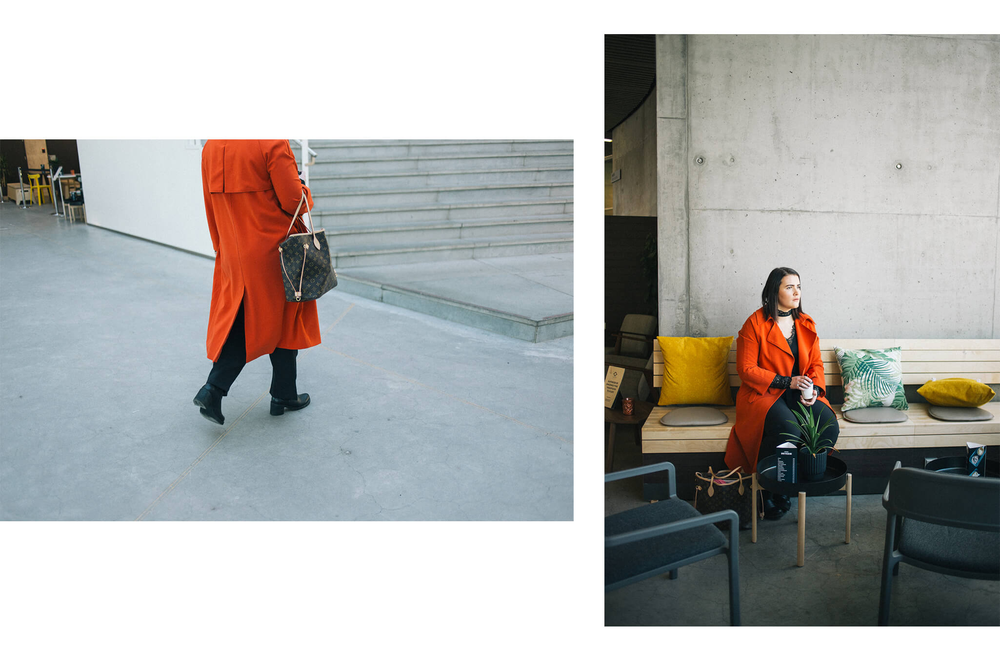

The president of the Reykjavík University Student Association, Sonja Björg Jóhannsdóttir, shares her experience of growing up with a mother who struggles with depression. The hardest thing was to come to terms with the fact that you don't force anyone to seek help. She says it is important for relatives to be present but also to find their boundaries. It does not overshadow the problems of others to discuss their own problems, everyone has the right to assistance and society needs to respond with increased access regardless of economy.
"When I'm 18 years old, my mother tries to commit suicide. It's as if the curtains have fallen or the curtains have been drawn in front of my eyes. It was a big shock, but at the same time I knew it was something that I couldn't face. I experienced a great breach of trust, a lot of anger and bitterness for a long time," says Sonja Björg Jóhannsdóttir, who shares her experience as a relative of a person with depression."
Sonja grew up in Akureyri with her parents and two younger brothers. She has always been a great social person, attending student union activities and pursuing her interests diligently. Today she has just graduated from psychology at Reykjavik University. There she holds the chairmanship of the University Student Association. The biggest issue of the association was to establish free psychological services for students, and their policy was implemented at the beginning of the year. "This was our focus on the board of SFHR since we took office and we are very proud to have made this happen," says Sonja.
"My mother was young when she had me and fell ill from depression at an early age. It was a completely different zeitgeist then and there was a lot of prejudice against seeking mental health care. She took everything hard and was incredibly hardworking, graduated from business administration, paramedic and then became a secondary school teacher," says Sonja, who took on a lot of responsibility for the home early on. "I spent a lot of time alone at home taking care of my brothers and took on all the roles in the home. I remember that I always wanted to have a good mom and be there for her, so she sought me out a lot. I didn't invite my friends over if she was having a bad day, and there were days when she was very moody, which is part of the disease. But it never occurred to me at the time that my mother was sick or that she could get help."
"But it never occurred to me at the time that my mother was sick or that she could get help."
Sonja has one memory from when she was nine years old that describes her experience in her youth. "My mom was breastfeeding my youngest brother and I came up to her crying begging me not to leave her alone, I took my brother and helped him burp and put him down. At the same time, I was looking after my older brother, then six years old, and making sure he was in the living room while watching a tape. At the time, I didn't think it was unusual, but in retrospect I can see that it was too much responsibility on the shoulders of a little girl."
"There is a tremendous lack of education about mental health issues. If I had known the symptoms and had clear resources on where to seek help, it would have made a huge difference. I was 18 years old and my mom was admitted to a psychiatric ward before I even knew she was depressed. It took me completely by surprise, as strange as that sounds."
Years of great distress followed. Sonja experienced intense anger and helplessness regarding the situation. Many years of codependency and repressed emotions took their toll. "I was very negative about the whole psychological process my mom was going through. I thought she was discharged too early, and I was angry at the psychologists and life in general. In hindsight, it was the best thing that could have happened to my mom to go to the psychiatric ward. It was just my way of releasing unresolved emotions and problems. I realized I couldn't be there for anyone except myself, and I was going to break down because of it."

Sonja says she has felt guilty about the thoughts that have arisen. She believes there is a need for more discussion about the relatives of those who are mentally ill. "It's a bit like on airplanes. You need to put the oxygen mask on yourself before you put it on someone else. As a relative, it's important to remember that you can't force anyone to seek help. The individual needs to want it themselves, and that can be the hardest part. Seeing that you've done everything you could and understanding where your limits are."
"As a relative, it's important to remember that you can't force anyone to seek help."
When asked what advice she would give to people in the same situation, she says the most important thing is to remember that everyone has the right to their own feelings. "For a long time, I felt like my depression was irrelevant. It's dangerous to compare yourself to others' traumas and belittle your own experiences and keep your feelings bottled up." She says this applies to life in general. "We shouldn't compare ourselves to each other, whether friends or family. We all have the right to help when we feel bad, and it's okay for us to feel bad. You don't overshadow others' problems by talking about your own."
Sonja moved to Reykjavik to study at Reykjavik University in 2014. She felt it was time to work on herself and sought the help of a psychologist. "I was diagnosed with depression, and receiving psychological treatment was very helpful. There are many factors that have helped me over time, but they all share a common element: expressing feelings. I reached out to female friends and my teacher, I wrote poetry, went to a psychologist, and enrolled in a Dale Carnegie course." It was in this course that Sonja first shared her story publicly. "I felt something shift inside me. I experienced a kind of inner calm and acceptance of the situation. I managed to shut out the bitterness I had carried for so long."
Sonja says that she and her mother are very close today and support each other. "I care deeply about her, and she is my favorite person in life. Today, societal discussions are much more open, which has helped both me and my mom. For example, I encouraged her to reach out to Stígamót, an important organization that promotes equality and offers help at no cost. Unfortunately, psychological services are very expensive, and not everyone can afford them."
When asked about her future plans, Sonja says she is interested in working with children. "Parenting and circumstances shape us as individuals and often explain our behavior. My passion in life is to ensure that all children have equal educational opportunities and access to the support they need. Implementing school psychologists at all educational levels is something that needs to be done. I envision working with children as a child psychologist or in another related role. I want to be part of shaping a society where we openly discuss our feelings, experiences, and eliminate prejudice. We all have the right to our feelings and need to learn to address our problems rather than bearing shame."
Interviewees appeared in the interviews on their own terms. The interview is based on their experiences and perceptions. It is worth noting that experiences are personal and not everyone experiences the same symptoms.
Hugrún also wants to point out the resources available for those who believe they are experiencing symptoms of depression.